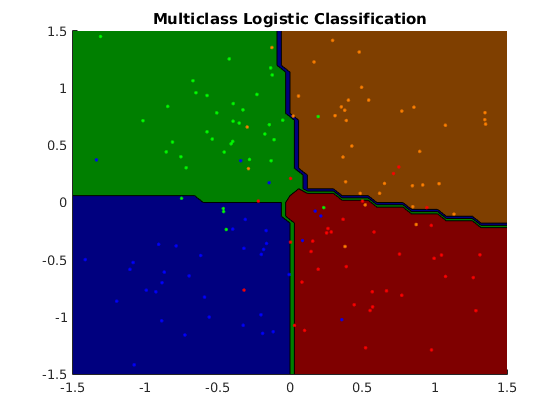
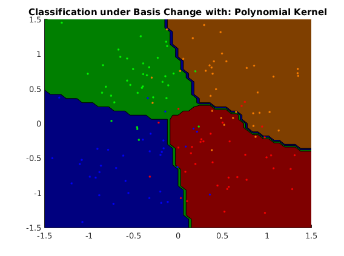
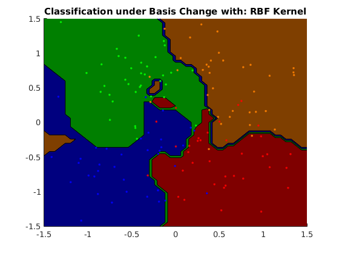
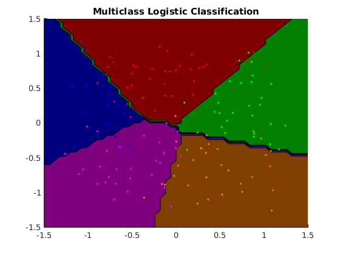
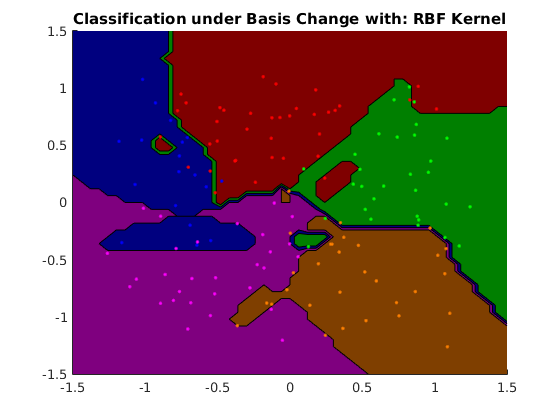
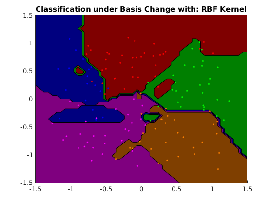
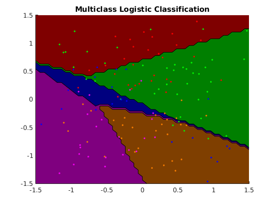
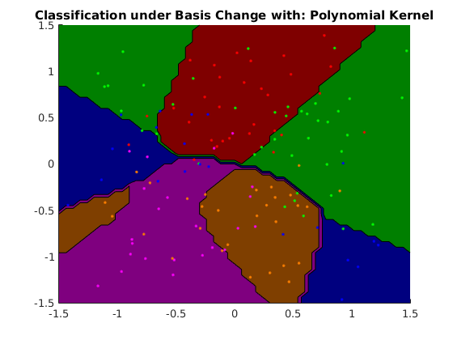
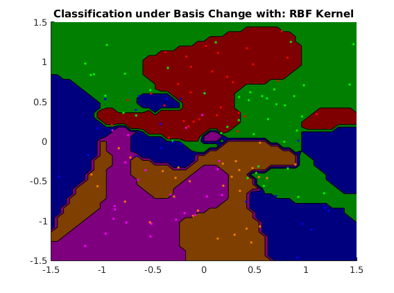

Contents
- Description of demo_multiclass_basis.m
- usage of multi-class logistic regression (4grid data)
- usage of multi-class logistic regression with polynomial basis (4grid data)
- usage of multi-class logistic regression with RBF basis (4grid data)
- usage of multi-class logistic regression (5grid data)
- usage of multi-class logistic regression with polynomial basis (5grid data)
- usage of multi-class logistic regression with RBF basis (5grid data)
- usage of multi-class logistic regression (gridMulti data)
- usage of multi-class logistic regression with polynomial basis (gridMulti data)
- usage of multi-class logistic regression with RBF basis (gridMulti data)
Description of demo_multiclass_basis.m
Demonstrates multiclass logistic regression in a variety of different bases and on synthetic datasets with particular structures
clear all close all generateData_4grid
usage of multi-class logistic regression (4grid data)
options_lg = []; model_lg = ml_multiclass_logistic(Xtrain, ytrain, options_lg); yhat_lg = model_lg.predict(model_lg, Xtest); testError_lg = mean(yhat_lg ~= ytest); fprintf('Averaged misclassification test error with %s is: %.3f\n', ... model_lg.name, testError_lg);
Averaged misclassification test error with Multiclass Logistic Classification is: 0.062
usage of multi-class logistic regression with polynomial basis (4grid data)
options_bs1 = []; options_bs1.basisFunc = @ml_kernel_poly; options_bs1.basisOptions.bias = 0; options_bs1.basisOptions.order = 3; options_bs1.subModel = @ml_multiclass_logistic; options_bs1.subOptions.addBias = 1; model_bs1 = ml_multiclass_basis(Xtrain, ytrain, options_bs1); yhat_bs1 = model_bs1.predict(model_bs1, Xtest); testError_bs1 = mean(yhat_bs1 ~= ytest); fprintf('Averaged misclassification test error with %s is: %.3f\n', ... model_bs1.name, testError_bs1);
Averaged misclassification test error with Classification under Basis Change with: Polynomial Kernel is: 0.138
usage of multi-class logistic regression with RBF basis (4grid data)
options_bs2 = []; options_bs2.basisFunc = @ml_kernel_rbf; options_bs2.basisOptions.sigma = 1; options_bs2.subModel = @ml_multiclass_logistic; options_bs2.subOptions.addBias = 1; model_bs2 = ml_multiclass_basis(Xtrain, ytrain, options_bs2); yhat_bs2 = model_bs2.predict(model_bs2, Xtest); testError_bs2 = mean(yhat_bs2 ~= ytest); fprintf('Averaged misclassification test error with %s is: %.3f\n', ... model_bs2.name, testError_bs2);
Averaged misclassification test error with Classification under Basis Change with: RBF Kernel is: 0.191
figure; plotClassifier(Xtrain, ytrain, model_lg); figure; plotClassifier(Xtrain, ytrain, model_bs1); figure; plotClassifier(Xtrain, ytrain, model_bs2); generateData_5grid  
usage of multi-class logistic regression (5grid data)
options_lg = []; model_lg = ml_multiclass_logistic(Xtrain, ytrain, options_lg); yhat_lg = model_lg.predict(model_lg, Xtest); testError_lg = mean(yhat_lg ~= ytest); fprintf('Averaged misclassification test error with %s is: %.3f\n', ... model_lg.name, testError_lg);
Averaged misclassification test error with Multiclass Logistic Classification is: 0.084
usage of multi-class logistic regression with polynomial basis (5grid data)
options_bs1 = []; options_bs1.basisFunc = @ml_kernel_poly; options_bs1.basisOptions.bias = 3; options_bs1.basisOptions.order = 2; options_bs1.subModel = @ml_multiclass_logistic; options_bs1.subOptions.addBias = 1; model_bs1 = ml_multiclass_basis(Xtrain, ytrain, options_bs1); yhat_bs1 = model_bs1.predict(model_bs1, Xtest); testError_bs1 = mean(yhat_bs1 ~= ytest); fprintf('Averaged misclassification test error with %s is: %.3f\n', ... model_bs1.name, testError_bs1);
Averaged misclassification test error with Classification under Basis Change with: Polynomial Kernel is: 0.080
usage of multi-class logistic regression with RBF basis (5grid data)
options_bs2 = []; options_bs2.basisFunc = @ml_kernel_rbf; options_bs2.basisOptions.sigma = 1; options_bs2.subModel = @ml_multiclass_logistic; options_bs2.subOptions.addBias = 1; model_bs2 = ml_multiclass_basis(Xtrain, ytrain, options_bs2); yhat_bs2 = model_bs2.predict(model_bs2, Xtest); testError_bs2 = mean(yhat_bs2 ~= ytest); fprintf('Averaged misclassification test error with %s is: %.3f\n', ... model_bs2.name, testError_bs2);
Averaged misclassification test error with Classification under Basis Change with: RBF Kernel is: 0.164
figure; plotClassifier(Xtrain, ytrain, model_lg); figure; plotClassifier(Xtrain, ytrain, model_bs1); figure; plotClassifier(Xtrain, ytrain, model_bs2); generateData_gridMulti
 
 usage of multi-class logistic regression (gridMulti data)
options_lg = []; model_lg = ml_multiclass_logistic(Xtrain, ytrain, options_lg); yhat_lg = model_lg.predict(model_lg, Xtest); testError_lg = mean(yhat_lg ~= ytest); fprintf('Averaged misclassification test error with %s is: %.3f\n', ... model_lg.name, testError_lg);
Averaged misclassification test error with Multiclass Logistic Classification is: 0.298
usage of multi-class logistic regression with polynomial basis (gridMulti data)
options_bs1 = []; options_bs1.basisFunc = @ml_kernel_poly; options_bs1.basisOptions.bias = 3; options_bs1.basisOptions.order = 2; options_bs1.subModel = @ml_multiclass_logistic; options_bs1.subOptions.addBias = 1; model_bs1 = ml_multiclass_basis(Xtrain, ytrain, options_bs1); yhat_bs1 = model_bs1.predict(model_bs1, Xtest); testError_bs1 = mean(yhat_bs1 ~= ytest); fprintf('Averaged misclassification test error with %s is: %.3f\n', ... model_bs1.name, testError_bs1);
Averaged misclassification test error with Classification under Basis Change with: Polynomial Kernel is: 0.227
usage of multi-class logistic regression with RBF basis (gridMulti data)
options_bs2 = []; options_bs2.basisFunc = @ml_kernel_rbf; options_bs2.basisOptions.sigma = 1; options_bs2.subModel = @ml_multiclass_logistic; options_bs2.subOptions.addBias = 1; model_bs2 = ml_multiclass_basis(Xtrain, ytrain, options_bs2); yhat_bs2 = model_bs2.predict(model_bs2, Xtest); testError_bs2 = mean(abs(yhat_bs2 ~= ytest)); fprintf('Averaged misclassification test error with %s is: %.3f\n', ... model_bs2.name, testError_bs2);
Averaged misclassification test error with Classification under Basis Change with: RBF Kernel is: 0.489
figure; plotClassifier(Xtrain, ytrain, model_lg); figure; plotClassifier(Xtrain, ytrain, model_bs1); figure; plotClassifier(Xtrain, ytrain, model_bs2);  